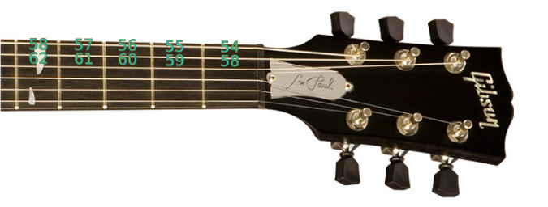
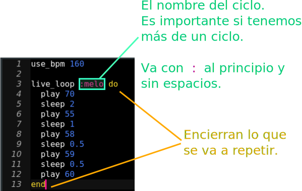
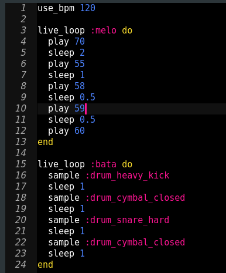

Taller de programación musical
Semana de la computación
¿Quiénes somos?

¿Qué estudiamos?
Licenciatura en Ciencias de la Computación
¿Qué vamos a hacer hoy?
¿Programar? ¿Y eso?

¿Esto es una canción?

¿Y esto?
¿Y esto?
¿Qué vamos a usar?
Sonic-pi

¿Cómo le decimos a Sonic-Pi qué sonido tocar?
Notas

Altura
Graves o agudas
De 0 a 127
|  |

|
|---|
Notas en Sonic-PI


Tiempo
Las canciones se rigen por un pulso base. El pulso nos sirve para entender cuando suena cada sonido.
Puedo tener más de un sonido por pulso.
Controlando el tiempo
Con sleep 1 le decimos a Sonic-Pi que espere 1 pulso.

Ejercicio:
Hacer sonar varias notas, de la más grave a la más aguda
Recordar:
- Tocar una nota: play nota
- Esperar pulsos: sleep pulsos
- 0 más grave, 127 más aguda
¡Más rápido!
En la música se habla de los "pulso por minuto" (se le dice bpm) de una canción. Los "pulsos por minuto" nos dicen que tan seguido suena casa pulso. A más pulsos por minuto más rápido suena. use_bpm 120 le pide a la computadora que tenga 120 pulsos por minuto.

Ejercicio: probar haciendo sonar su canción a distintas velocidades.
Recordatorio: cada vez que apretan "Run" la computadora usa el código como está escrito.¡Otra vez!
Un ciclo en programación le pide a la computadora que repita algo. En nuestro caso, significa que se repite la melodía.
Para eso usamos live_loop para rodear el código que se repite. "Loop" significa ciclo.
Ejercicio: encerrar a su melodía en un live_loop, ponerle nombre y ver como se repite.
Recordatorio: el botón "Stop" para la música. Si apreto "Run" actualiza el sonido a lo que está escrito.Samples
Un sample es un pedacito de grabación corta. Sirve para agregar cosas nuevas a una canción. Por eso los DJ hoy usan computadoras. Sonic-pi tiene muchos samples. Por ejemplo:- sample :ambi_lunar_land
- sample :bass_hard_c
- sample :elec_blup
Ejercicio: incluir samples en su melodía
Recordar que los samples tienen una duración y hay que decirle a la computadora que espere después de hacerlo sonar.Batería
En sonic-pi también hay sonidos de batería.
Ejercicio: usando sample y sleep, hacer sonar la base de rock. Para eso hacer sonar cada sample en el beat indicado en color.
Somos una banda
Podemos usar dos live_loop con nombre distinto para varios instrumentos. Por ejemplo:|  |
|---|